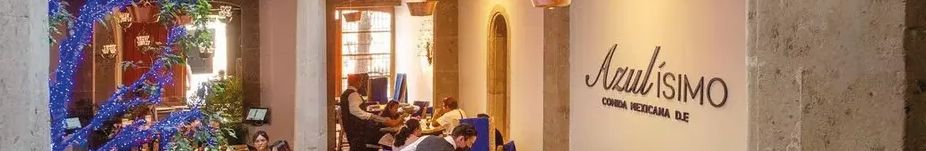
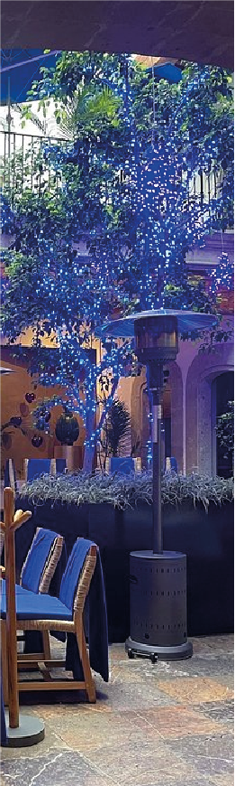

AZULISIMO

Azulísimo es una de las propuestas gastronómicas más recientes del grupo de restaurantes “Azul”, dirigido por el reconocido chef mexicano Ricardo Muñoz Zurita, famoso por rescatar y preservar la cocina tradicional mexicana regional. El restaurante se encuentra en pleno Centro Histórico y forma parte de la misma línea culinaria de Azul Histórico y Azul Condesa.
El concepto de Azulísimo busca ofrecer una experiencia más íntima, elegante y contemporánea enfocada en la alta cocina mexicana tradicional, utilizando ingredientes nacionales, técnicas artesanales y recetas regionales poco conocidas.
Azulísimo Restaurante CDMX se encuentra dentro de un inmueble histórico del Centro Histórico de la CDMX, una zona caracterizada por construcciones coloniales y porfirianas adaptadas a usos modernos.
El edificio conserva elementos clásicos del Centro Histórico:
- muros altos,
- estructura colonial,
- patios interiores,
- iluminación cálida,
- y detalles arquitectónicos tradicionales combinados con diseño contemporáneo.
El restaurante apuesta por una estética elegante y sofisticada donde la arquitectura funciona como parte de la experiencia gastronómica. Muchas áreas mantienen:
- piedra aparente,
- madera,
- herrería tradicional,
- y decoración inspirada en el arte popular mexicano.
Además, el ambiente está pensado para sentirse más exclusivo y tranquilo que otros restaurantes turísticos del Centro, con iluminación tenue y una propuesta visual muy cuidada.
En Azulísimo Restaurante CDMX puedes encontrar:
- moles tradicionales,
- cocina oaxaqueña y yucateca,
- antojitos mexicanos gourmet,
- mezcales y destilados mexicanos,
- postres tradicionales reinterpretados,
- y platillos de temporada.
